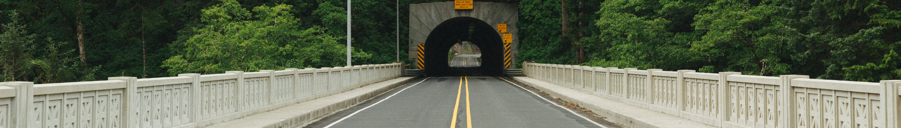

A beginning
"The wind was not the beginning. There are neither beginnings nor endings to the Wheel of Time. But it was a beginning." - Robert Jordan, The Wheel of Time

Ok, I'm finally doing it. I'm starting a blog.
I want to challenge myself to become a better communicator, to become better at articulating my thoughts and ideas. I think a good way to do this is to get into the habit of writing quality, public-facing content. Content written to be understood by others.
I don't really have a concrete plan of what I'll put here yet, but I plan to try to make a post here every Sunday, starting April 12th. These posts could be about anything. I know I want to touch on my experiences being an undergraduate student in the midst of the COVID-19 outbreak. I also might write about mountain biking, professional soccer, a challenging programming problem, a person I met, or the restauraunt I ate at yesterday. The sky is the limit!
I want to challenge myself to become a better communicator, to become better at articulating my thoughts and ideas. I think a good way to do this is to get into the habit of writing quality, public-facing content. Content written to be understood by others.
I don't really have a concrete plan of what I'll put here yet, but I plan to try to make a post here every Sunday, starting April 12th. These posts could be about anything. I know I want to touch on my experiences being an undergraduate student in the midst of the COVID-19 outbreak. I also might write about mountain biking, professional soccer, a challenging programming problem, a person I met, or the restauraunt I ate at yesterday. The sky is the limit!
4 · 5 · 2020